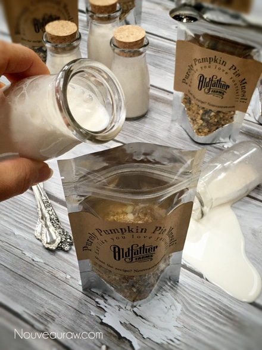
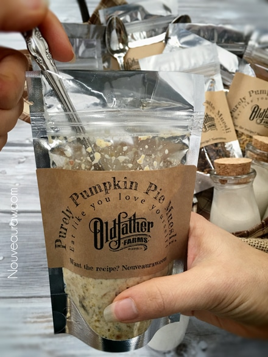
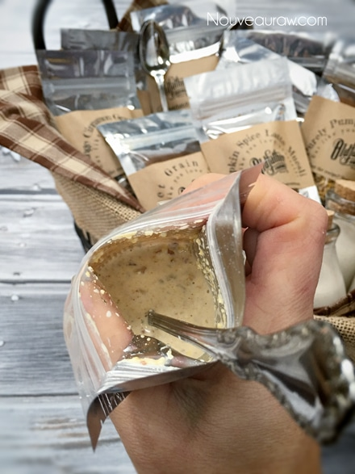

Quality-Time Breakfast

Today I wan to share a neat way to create single-serving cereals. I made these for my dad who was trucking up on the North Slope of Alaska, and now in California.
All through the year, I create raw goodies for him to keep in his semi (aka home away from home). Regardless of what it is, it has to be durable, transportable, nutritious (according to my standards) and delicious (according to his standards).
So this year for Christmas I created these individual muesli cereal pouches. The bags are food safe and liquid proof. All he has to do is open them, pour in his milk of choice and either eat it right away or close it back up, letting it soak for 30 minutes or longer. The longer it soaks, the more porridge-like it will be.
While I was putting these cereal pouches together, it got me thinking about my dad, and the first thing that came to mind was quality time. Let me explain.
Quality time… aah I have such fond memories of the family quality time. Back when I was 13 years old, we moved our little family to Alaska. The two-week trip cost us every penny we owned by the time we entered the Alaskan border. You know that saying, “We didn’t even have two pennies to rub together?” I think we coined it. (pun intended haha) Times were rough, but we found our way through it. It’s truly amazing what can endeavor through life when we have to.
During our moments of hardship, we latched onto the phrase, “family quality time.” For instance, when we didn’t have much money for food, we went fishing. We spent countless hours sitting on river banks… pole in one hand, and our heads resting on the other. We had the worse luck catching fish, and as the boredom dragged on we would holler to one another… “Family quality time dad?!” and then we all laughed. That silly little phrase always lifted our spirits.
Then there was the TV that we pawned and bought back so many times, that we lost count. In the mid-winters of Alaska when the sun went down in the early afternoon… the darkness got long and boring being cooped up indoors. So, we watched a lot of TV. Mom and I would be snuggled up on the couch, playing tug-a-war with a blanket, watching some Hallmark movie. Dad would walk in, unplug the TV and start to carry it out the door. (a man of few words) No sooner had he left, then he returned with groceries in hand.
When dad would get some work, and the essentials in the pantry were stocked back up, the TV was brought (bought) back. It wouldn’t be long, till dad would unplug the TV and carry it out the door yet again and would come home with toilet paper. Hey! We have our priorities! This scenario was stuck on the wash, rinse and repeat cycle… the whole pawning and buying back the TV, not the washing and rinsing of toilet paper. Lol, I swear that TV goes down in history as the most expensive TV ever owned.
I share all this because it is so easy for lives to become full of distractions. Distractions that strip quality time from our families. These times are important and vital, for they create bonds, friendships, and memories. I mean, shoot, even though our quality time was sometimes forced upon us due to our lack of funds, it brought us closer together. It helped us laugh at a not-so-funny-time in our lives, and blessed us with such memories that still make us chuckle to this day.
So, this got me thinking… you don’t have to go and pawn your TV, maybe just turn it off. Call the family in to create an in-home family tradition that can either take place yearly, monthly or weekly. Create a breakfast basket filled with an assortment of individual cereal pouches, milks, spoons and napkins. Have everyone gather in the living room or den. Not the kitchen table, make it adventurous… think outside of the breakfast table. :) Maybe throw some pillows on the floor for seating, perhaps place a board game in the center of the floor, and have everyone gather around. Pass the basket around, letting everyone select their favorite muesli, then pass the milk bottle around, letting them fill up the cereal pouches. Eat, play games…. create quality time and memories!
For recipe ideas, please visit (here).
For packaging ideas and supplies, click (here).



© AmieSue.com